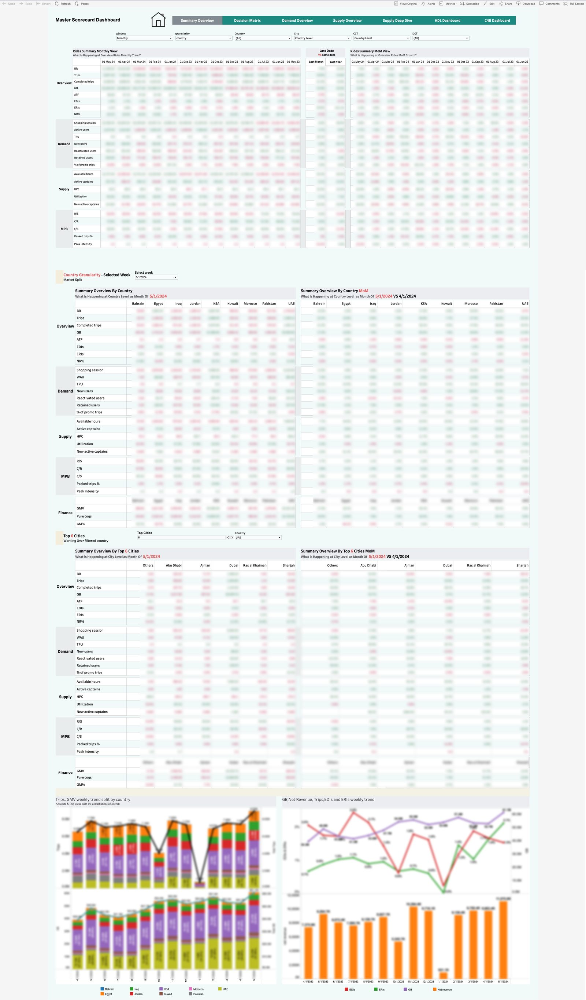
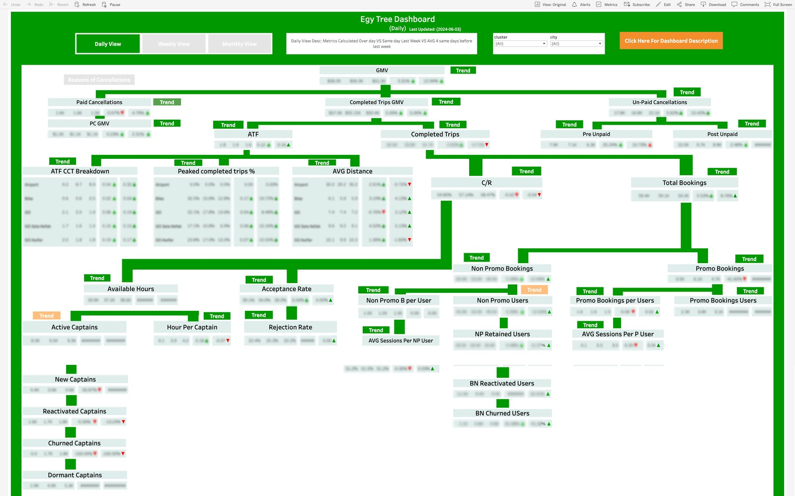

Executive Performance Intelligence
The command center leadership ran nine markets on: a 7-tab Master Scorecard, a full-page GMV driver tree, a multi-scenario goals tracker, and a weekly demand model — one governed view of the company's KPIs.
Note on numbers: no figure from inside a client dashboard is presented here as an achievement. The build is the story; internal data stays internal, and published screenshots have absolute figures blurred.
01The Business Problem
Leadership across nine markets had no single daily view of the company's KPIs. Every question meant a new ad-hoc deep-dive, every team had its own numbers, and executive meetings started with reconciling figures instead of making decisions. When a headline metric moved, finding out why took analysts, not minutes.
02My Role
Sole analyst on the product: I owned the pipeline end to end — self-written SQL data sources, blended Google Sheets models, metric definitions written into the dashboards themselves, and the multi-tab Tableau architectures on top. Design, build, governance, and iteration were one person's job: mine.
03What I Built
The Master Scorecard (7 tabs)
A single executive command center blending 8 Google Sheets and SQL sources into 15+ interconnected views with city and product drill-downs — read daily by leadership across nine markets. Tabs span Summary Overview, Decision Matrix, Demand, Supply (overview + deep dive), HDL, and C4B.
GMV Driver Tree — six levels down
A full-page metric tree decomposing GMV into demand, supply, pricing, and promo drivers. Every node shows the current day vs same-day-last-week vs a 4-week average, with change arrows and a per-node trend view — down to the captain funnel (active → new → reactivated → churned → dormant).
Goals Tracker — 4 target scenarios
A 9-country tracker with scenario switching (Normal / P1 / P2 / P12 targets) and a country navigation grid. Each month shows metric value, target value, and achievement with directional coloring — target-vs-actual at a glance.
Weekly Demand Model (Sheets)
A weekly network model grouping Topline, Customer Base, Customer Segments, Reliability, and Promo Engagement metrics with vs-last-week and vs-last-month deltas and snapshot charts. Described text-only: the file carries an internal data classification, so no screenshot is published.
04Signature Build Details
05KPIs Defined & Governed
06Decisions Enabled
Master Scorecard — Summary Overview
(blur all absolute figures)assets/exec-master-scorecard.png

Egypt GMV Driver Tree — full page
(blur all absolute figures)assets/exec-driver-tree.png
